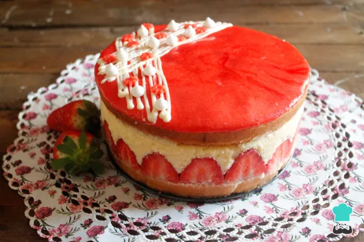

Tarta Fraisier
Regresar

La tarta fraisier, conocida también como tarta de fresa, es un clásico de la repostería francesa. Esta elaboración está rellena totalmente de fresas enteras, aunque lo más característico son las mitades alrededor de la tarta que la hacen tan vistosa. La composición de la misma consta de dos planchas de bizcocho genovés, relleno de fresas y crema muselina. En la parte superior, normalmente contiene una fina capa de mazapán rojo o merengue, según sea su procedencia, aunque el más conocido es el que os traemos aquí en RecetasGratis, que es con mazapán. Además, señalamos que no es una tarta complicada de hacer, pero sí que tiene varios pasos, por lo que debes tener un poco de paciencia. El resultado es una finísima tarta de la reputada pastelería francesa que alegrará a todos los comensales.
Ingredientes
Para la crema muselina:
- 125 gramos de azúcar
- 4 yemas de huevo
- 50 gramos de azucar
- 500 mililitros de leche
- 1 cucharada de postre de extracto de vainilla líquida
- 250 gramos de mantequilla sin sal
Para el bizcocho
- 175 gramos de azúcar
- 6 huevos
- 1 pizca de sal
- 25 mililitros de aceite de girasol
- 175 gramos de harina común (1¼ tazas)
- Para el almíbar
- 50 gramos de azúcar (¼ taza)
- 50 mililitros de agua
- 1 cucharada sopera de cointreau, Kirsch o cualquier licor
Para el mazapán:
- 75 gramos de azúcar glas
- 75 gramos de almendra molida
- 3 cucharadas soperas de miel
- 2 gotas de colorante rojo
Relleno
Preparación
- Para empezar con la receta de tarta fraisier primero debes hacer la crema muselina. Para ello, en un bol añade el azúcar junto con las yemas de huevo y la maicena, mezcla bien con una cuchara de madera. Te quedará como si fuera una pasta.
- Pon a parte en una olla la leche junto con la cucharada de postre de vainilla líquida y calienta a fuego fuerte sin que llegue a hervir.
- Retira del fuego la leche caliente y vierte un cacito de la leche en el bol donde tenías las yemas junto con el azúcar y la maicena. Mezcla rápidamente para que las yemas no se cuajen. Seguido, continúa añadiendo la leche caliente poco a poco mientras mezclas con unas varillas manuales.
- Vuelve a incorporar todo en la olla y deja que hierva a fuego suave, no olvides remover de vez en cuando, sobre todo al final cuando veas que la crema espesa. Retira del fuego y vierte la crema pastelera en un bol. Seguido, cubre con papel film, debe entrar en contacto con la crema, deja enfriar al menos 2 horas. Retira la mantequilla de la nevera para que se ablande.
- Una vez fría la crema muselina, trocea la mantequilla y añade poco a poco a la crema mientras bates con unas varillas eléctricas. Cuando esté bien batida, ya estará lista para su uso, pero si no se utiliza en el momento mejor reserva en la nevera de nuevo.
- Ahora sigue con el bizcocho para la tarta fraisier. Para ello, precalienta el horno a 180 ºC. A continuación, añade en un bol el azúcar con los huevos y una pizca de sal, bate bien con unas varillas eléctricas. La mezcla debe espumear, dado que no le añadirás levadura para que suba, pues no es el propósito de esta receta de la tarta fraisier fácil.
- Incorpora el aceite de girasol y sigue batiendo.
- Tamiza la harina encima de la mezcla aireada de huevos, azúcar y aceite. Mezcla con una espátula con movimientos envolventes para seguir añadiendo aire a la mezcla del bizcocho para la tarta fraisier francesa.
- Engrasa un molde de unos 20 cm de diámetro y vierte la mezcla del bizcocho. Seguido, hornea con calor arriba y abajo a 180º C durante 40 minutos, o hasta que al pinchar el bizcocho con un cuchillo afilado salga limpio sin restos de masa.
- Una vez horneado el bizcocho si observas que se ha abombado un poco, con ayuda de una manopla en caliente aplana un poco el abombamiento. Después, desmolda y deja enfriar por completo.
- Cuando esté bien frío el bizcocho, córtalo por la mitad con un cuchillo bien afilado. Utiliza un molde desmontable algo más pequeño, entre 17-18 cm y corta las planchas del bizcocho para que sean iguales que el molde y encajen bien.
- Engrasa el molde desmontable y forra las paredes con papel de horno, señalamos que debes dejar el papel un poco más alto que el molde. Pon la primera mitad de bizcocho en la base y encaja bien. Seguido, prepara un almíbar casero con los 50 gr de azúcar, los 50 ml de agua y la cucharada de licor, lleva a hervir y retira del fuego. Empapa bien la plancha del bizcocho con la mitad del almíbar.
- Retira la crema muselina de la nevera y vuelve a batir para que quede cremosa de nuevo. Añade en el fondo del bizcocho un poco de crema, la justa para pegar las fresas.
- Corta por la mitad entre 12-15 fresas y colócalas en la pared del molde, una al lado de la otra.
- Rellena toda la tarta con las fresas enteras.
- Cubre toda la tarta con la crema muselina, además, debes reservar un poco de crema para luego poner el mazapán. Da unos pequeños golpes en el molde hacia abajo para asentar bien la crema y que no forme burbujas. Seguido, alisa la superficie de la crema con una espátula. ¿Qué te está pareciendo la tarta fraisier con crema mousseline y mermelada de fresas?
- Cubre la tarta con la otra mitad de la plancha del bizcocho, presiona un poco con las manos y empapa bien con el resto del almíbar. Reserva la tarta en la nevera durante al menos 4 horas, o mejor de un día para otro para que cuaje bien.
- Por último, elabora el mazapán. Para ello pon en un bol la almendra molida junto con el azúcar glass y dos cucharadas de miel. Mezcla bien, primero con una cuchara de madera y luego, con las manos. Añade la otra cucharada de miel si es necesario e incluso media más, eso dependerá de la textura que te quede, debe quedar tipo plastilina.
- Cuando ya tengas la textura deseada, añade el colorante. Si puede ser busca que tenga un color rojo intenso, como las fresas. Mezcla bien con las manos.
- Pon la masa de mazapán entre dos papeles de horno y aplana con un rodillo haciendo una forma circular y dejando una masa de mazapán fina.
- Retira el papel del horno de arriba de la masa de mazapán. Seguido, coge de la nevera la tarta fraisier y desmolda con cuidado, pero no retires el papel aún. El molde de la tarta te servirá para cortar un círculo de mazapán para decorar la tarta.
- Ahora, con ayuda de una espátula, añade un poco de la crema muselina encima de la plancha de la parte superior de la tarta fraisier. Pon la justa para que el círculo de mazapán quede adherido.
- Retira el papel de horno que tenías alrededor de la tarta fraisier y con mucho cuidado, coloca el círculo de mazapán encima de la tarta.
- Puedes dejarla tal cual o añadir tres fresas por encima como decoración. También puedes decorarla como nosotros hemos hecho, con unas líneas finas de chocolate blanco fundido junto con unos pequeños merengues blancos y unas florecitas hechas con los restos de mazapán sobrante.
- Reserva en la nevera hasta el momento de servir. Consume tu tarta fraisier lo antes posible, o hasta tres días después de su elaboración